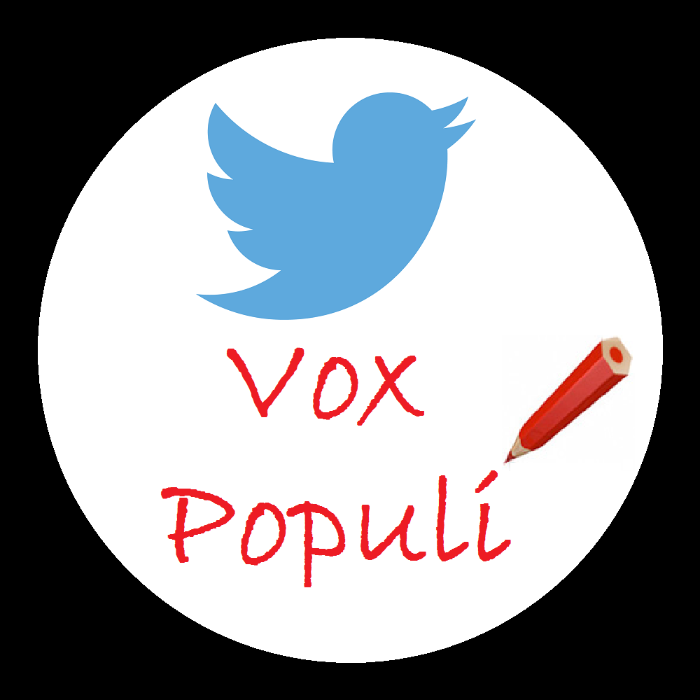

Over deze website
Op 15 maart gaat Nederland stemmen. Wij houden de stemming op Twitter bij. Hierboven staat de zetelverdeling in de tweede kamer gebasseerd op hoe vaak politieke partijen de laatste tien dagen op Twitter zijn genoemd. Bij de parlementsverkiezingen van 2012 bleek er een sterk verband te zijn tussen hoe vaak een politieke partij genoemd wordt op Twitter en hoe deze partij het doet in de peilingen (zie ons artikel Relating Political Party Mentions on Twitter with Polls and Election Results).
Hieronder staan grafieken met het verloop van het aantal partijvermeldingen op Twitter in de loop van de tijd. De eerste grafiek is van de laatste tien dagen, de tweede van de laatste twee maanden. Deze pagina wordt elk uur bijgewerkt met de nieuwste gegevens. De metingen worden gedaan op de tweets uit Twiqs, een dienst waarin ongeveer 40% van de Nederlandse tweets doorzoekbaar zijn. We bedanken SURFsara voor het beschikbaar stellen van de tweets via https://twinl.surfsara.nl.
Voor vragen kunt u terecht bij Eric Sanders, e.sanders@let.ru.nl.
% vermeldingen laatste 10 dagen
{% for party_name in party_names_order_by_yesterday_mentions %}
| {{ party_name }} |
{% endfor %}
% vermeldingen laatste 2 maanden
{% for party_name in party_names_order_by_yesterday_mentions %}
| {{ party_name }} |
{% endfor %}
Actueel
{{ peak_explanation }}
Onderzoek van Eric Sanders, ontwerp door Wessel Stoop, code door beiden.